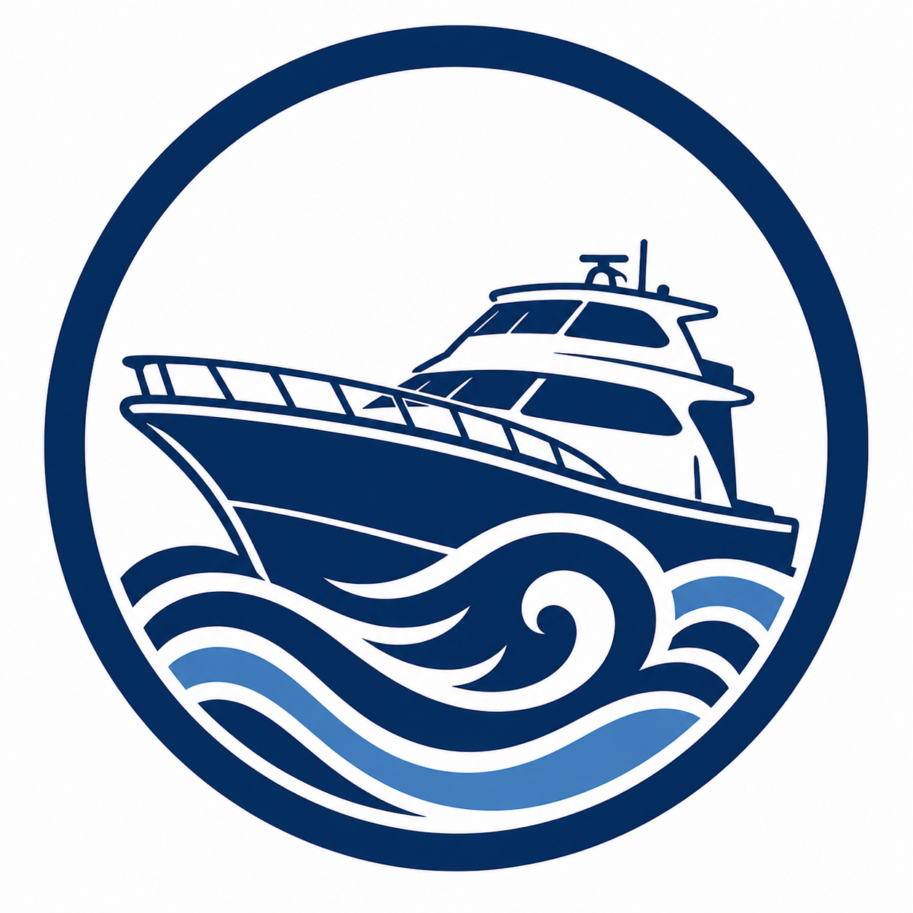

BRAND MARK · 遊漁船サンライズ

120 · splash
72 · login
44 · header
28 · favicon
遊漁船サンライズマーク
— お客様支給。スポーツフィッシング艇が波頭を切り裂く円形シール。
色は
navy（紺）
単色＋ライトブルーのアクセント。背景透過なしの円形なので、
濃色サーフェス上では
白いセーフエリア
として丸く抜けて見える点に注意。
パス：
assets/brand-mark.png
ON DARK SURFACES · 濃色背景
on ocean gradient
in top bar
tab favicon
FUNCTIONAL GLYPHS · UNICODE
◀
U+25C0
previous month
calendar nav
▶
U+25B6
next month
calendar nav
✕
U+2715
dismiss
booking-detail close
✓
U+2713
confirm
submit-button suffix
→
U+2192
proceed
「次へ →」
←
U+2190
back
「← 戻る」